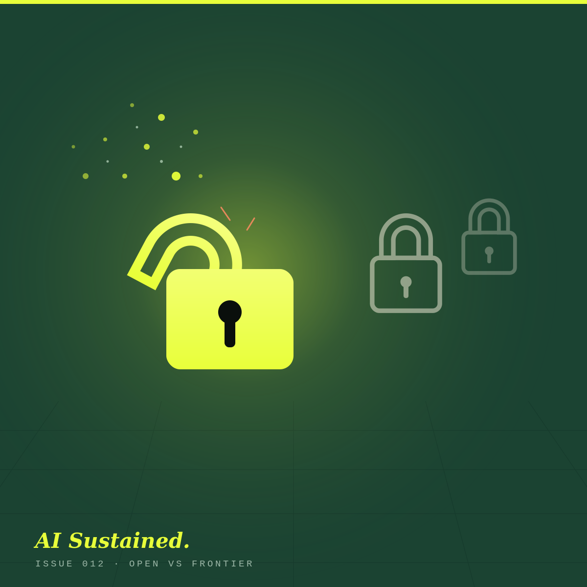

The free one that scared the expensive ones.
China's Moonshot AI just released Kimi K3, the biggest “open” AI model ever built, and it's roughly half the price of ChatGPT's Sol and a third of Claude's Fable 5. Two words explain the whole story: open and frontier. Nobody tells you what they mean. Let's fix that.

How deep do you want to go? Pick a level and the article rewrites itself.
A Chinese lab gave away its best model.
On 16 July 2026, a Beijing-based lab called Moonshot AI released Kimi K3, and then said it would hand over the actual model, free, for anyone to download. The full files are due by the end of the month.
It is, by a distance, the biggest “open” AI model anyone has released: 2.8 trillion parameters (the industry's rough measure of size), a memory that holds about eight novels' worth of text at once, and early scores that match or beat the best American models on some coding tasks.
The part that made OpenAI and Anthropic sit up wasn't the size. It was the price. Kimi K3 does frontier-grade work for a fraction of what the closed models charge. To understand why that matters, you need the two words in the headline.
“Open” vs “frontier”, in plain English.
These aren't opposites; a model can be both. But in everyday chat, people use them as shorthand for two very different ways of buying AI. Here's the simplest version.
You rent access. Never the recipe.
A frontier model is one of the newest, cleverest models going. The company keeps it locked on its own computers and lets you pay to use it, through an app or a subscription. You get the meal; you never see the kitchen. ChatGPT's Sol and Claude's Fable 5 work this way. Brilliant, convenient, and you pay per visit, forever.
They hand you the actual model.
An open model (properly, “open-weight”) is one where the company gives away the finished model file itself. You can download it, run it on your own computers, look inside it, and change it, with no per-use fee if you host it yourself. Kimi K3 works this way. You're handed the recipe and the ingredients. Your kitchen, your rules.
That's the whole distinction. Frontier is a service you rent. Open is a thing you own. Kimi K3's trick is being open while performing close to the rented frontier, which, until recently, was meant to be impossible.
One honest caveat: “open-weight” isn't quite the same as fully “open-source”. You get the finished model, but not always the recipe notes: the exact data and code used to train it. Close enough for almost everyone; worth knowing if a purist corrects you at a party.
How much cheaper, exactly?
AI is sold by the “token”, a chunk of text worth roughly three-quarters of a word. “In” (input) is everything you send the model: your question, plus any document, email thread or chat history you paste in. “Out” (output) is everything it writes back. You're billed for both, quoted per million tokens, and output almost always costs more, because writing is harder work for the machine than reading.
Whether that price tag matters to you at all depends entirely on how you use these models:
You'll probably never see a token.
On a normal £20-a-month ChatGPT, Claude or Kimi subscription, the per-token price is hidden; your flat fee covers it. These numbers live behind the scenes. As a beginner, treat “in/out per M” as trivia: handy for understanding the news, irrelevant to your actual bill.
Now every word has a meter running.
The moment you wire a model into your own tool or script, through its API, the subscription vanishes and you pay per token instead. Every prompt you send and every answer it writes is metered. Paste a big document into a loop that runs a thousand times and output is where the bill lands. This is exactly where Kimi being half-price stops being trivia and becomes real money.
Here are the three, side by side.
Put simply: on the output you actually pay for, Kimi K3 is about half the price of Sol and roughly a third of the price of Fable. In money you can picture: a full novel's worth of AI writing (about 100,000 words) costs roughly $2 on Kimi K3, $4 on Sol, and nearly $7 on Fable. And if you run Kimi on your own kit, the per-use fee drops to your electricity bill.
Frontier is a service you rent. Open is a thing you own. Kimi K3 is the first time owning came this close to renting.
The whole field, on one page.
If you remember nothing else, remember these three sentences.
- What it is: the biggest give-it-away model ever made.
- Why it matters: near-frontier quality at pocket-money prices.
- The catch: it's a Chinese model; mind where your data goes.
- Best for: high volume, tight budgets, running your own setup.
- What it is: ChatGPT's newest large model.
- Why it matters: fast, polished, huge memory, mid-priced.
- The catch: rented only; you never hold the model.
- Best for: most people, most days. The safe default.
- What it is: the premium, top-of-the-range brain.
- Why it matters: still the best at genuinely hard work.
- The catch: the dearest of the three, when you can get it.*
- Best for: the tricky jobs where being right is worth the money.
*Fable 5 has been under a US export-control suspension since mid-June; see our earlier issue. Prices shown are its list rate; availability comes and goes.
Can I run Kimi on my laptop?
Short answer: no, and it's not close. This is the bit that gets lost when people say “open means free to run yourself”.
A basic HP or Dell laptop, even a nice, new, expensive one, cannot run Kimi K3. The model is 2.8 trillion parameters. To run it you'd need its full brain loaded across a rack of specialist data-centre chips, the kind that cost more than a car each, and you'd need dozens of them, plus terabytes of fast memory. In practice that's a cluster worth hundreds of thousands of pounds, humming away in a server room. Not a laptop. Not a gaming PC. Not even a single powerful server.
So what can a normal laptop run?
Smaller open models, and only those. With free tools like Ollama or LM Studio, a modern laptop with a decent graphics chip (or a Mac with plenty of memory) can happily run open models in the 8-to-20-billion range: fine for private, offline tinkering, drafting and note-summarising. That's billion. Kimi K3 is 2,800 billion. Different sport, different stadium.
So for you, in real life, “open” doesn't mean you download Kimi and run it at home. It means you still rent it online, through Moonshot's own site and apps, or a reseller like OpenRouter, the same way you'd use ChatGPT. “Download it and run it yourself” is a headline for cloud companies and big IT departments, not people with laptops.
Can I feed it my company data?
Careful here. This is the question that actually matters, and it splits into two: where does my data go, and will it be used to train the model?
- Frontier models (ChatGPT, Claude), on paid business or API plans: by default they don't train on your data, and you get retention controls and a proper contract. You have a paper trail and a company to hold to account. (Free consumer tiers can be different; there's usually a training toggle worth checking.)
- Kimi via Moonshot's site or API: it's a Chinese company, so your data travels to and sits on their servers, under their policies and their country's laws. What they do with it (training, retention) is theirs to set and change. Verify their terms before sending anything sensitive, and assume less control by default. Plenty of UK and EU firms won't send company data there on principle, whatever the price.
Here's the twist, and the one genuine data advantage of “open”: if a company self-hosts the weights on its own machines (that expensive cluster from the last section), the data never leaves the building. Nothing is sent to anyone. Total control. But you only get that prize if you can afford the hardware to claim it, which rules out almost everyone reading this.
Data policies change often and vary by plan and region; this is general guidance, not a substitute for reading the provider's current terms. When in doubt, don't paste it in.
Should a beginner care, or steer clear?
If you're just starting out, the honest truth is that open vs frontier barely matters to you yet, and that's a relief, not a gap in your knowledge.
Stick with the polished frontier apps: ChatGPT, Claude, Gemini. They're the safe default: reliable, well explained, sensible data terms on a paid plan, and you never have to think about tokens or hardware. Open models like Kimi K3 only start to matter when one of three things becomes true:
- You're building something and the per-token bill starts to hurt.
- Your data legally can't leave your own systems, so you need to host the model yourself.
- You genuinely want to tinker under the bonnet.
None of those are day-one concerns. So is it “safer to stay away”? Not because open models are dangerous; a model is a model. The real safety question was never open vs frontier; it's who sees your data. Don't paste sensitive or company information into any model, open or closed, Chinese or American, until you've checked what the provider does with it. Get that one habit right and you can walk up to any of them with confidence.
What this does to the market.
You probably won't switch to Kimi K3 tomorrow, and that's fine. But the release changes the weather, and the weather reaches your subscription.
- Prices only go one way now. When a give-it-away model performs this close to the paid ones, the paid ones have to justify the gap, usually by getting cheaper or more generous. Good news for your bill.
- “Which is best?” matters less every month. The top few models are now separated by a coat of paint. Pick the app whose answers you enjoy reading. That's a fair way to choose.
- The free tiers get better too. To compete with “free and nearly as good”, the polished apps you already use tend to widen their free allowances. You benefit without lifting a finger.
And the usual health warning: most of this week's “beats the Americans” claims are early and largely self-reported. Independent testers take a couple of weeks to catch up. Believe the charts then, not now.
Three things worth doing this week.
Go deeper, then get the next issue in your inbox.
The technical Substack edition has the engineering under the bonnet: the mixture-of-experts trick, the export-control backdrop, and the full price maths. Subscribe and each new issue lands in your inbox. Practical, evidence-led, no hype.